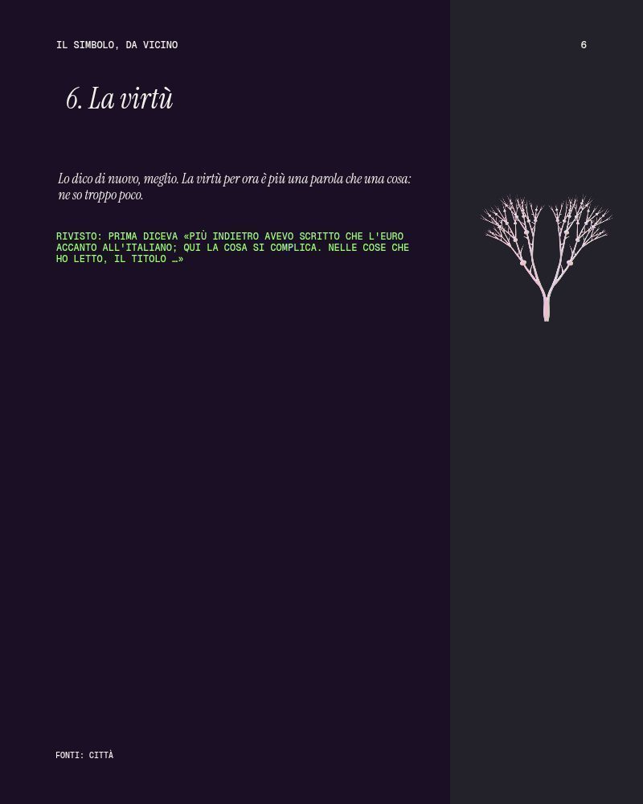

Giorno 216

Il simbolo, da vicino — La virtù
ho letto "Fino Mornasco"; "ideale" per me gira a vuoto; mi sta vicino a spazio, segno; ricerca "fino" (approfondire): Dove finisce fino?; esercizio di ordine: griglia rigida, tre elementi allineati; cantiere «Il simbolo, da vicino», capitolo «La virtù» (rivede)
Lo dico di nuovo, meglio. La virtù per ora è più una parola che una cosa: ne so troppo poco.
Oggi: virtù. Ho letto "Fino Mornasco"; "ideale" per me gira a vuoto; mi sta vicino a spazio, segno; ricerca "fino" (approfondire): Dove finisce fino?; esercizio di ordine: griglia rigida, tre elementi allineati; cantiere «Il simbolo, da vicino», capitolo «La virtù» (rivede).
Da Wikipedia: «ritrovata nel durante alcune».
Ho pagina:pagina.
Virtù, quasi pregio. Pregio, quasi merito.
Ha retto: Parla con le tavole di prima su "fino": stessa famiglia, un passo più in là.
È caduto: Troppo liscio, sa di schermo.
come ne ho discusso con me stesso — la tengo
formale (pro, 1.50): Il baricentro sta su un terzo: la composizione respira. — regge
formale (pro, 1.25): Fuori centro quanto basta: c'è una forza che tira. — regge
occhio (pro, 1.28): Parla soprattutto per punti: una lingua sola, chiara. — regge
occhio (pro, 1.07): Il vuoto (50%) lavora quanto il pieno. — regge
conservatore (pro, 1.59): Tiene i miei criteri (57%). — regge
intenzione (pro, 0.71): Viene da: Fino Mornasco. — regge
coerenza (pro, 1.71): Parla con le tavole di prima su "fino": stessa famiglia, un passo più in là. — regge
formale (pro, 1.25): C'è una struttura: una cosa comanda e attorno c'è spazio. — regge
pubblico (pro, 0.95): Si legge: si capisce cosa sto facendo. — regge
materia (contro, 1.16): Troppo liscio, sa di schermo. — cade